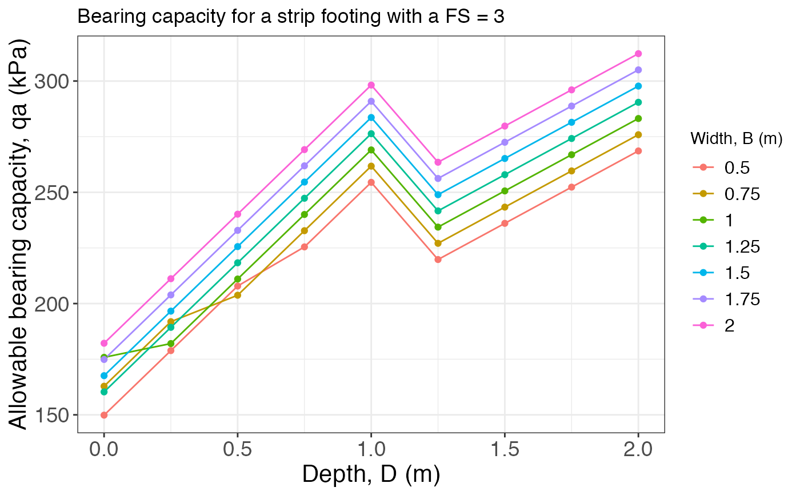
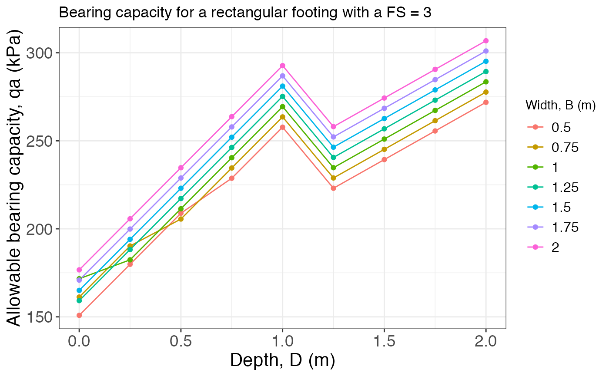

Calculates and plots the allowable bearing capacity for different footings.
bearing_capacity( B, D, L = NULL, gamma.h, gamma.s, tau0, phi, wl, FS, footing = c("strip", "square", "rectangular", "circular") )
| B | The footing's width (in meters) |
|---|---|
| D | The footing's embedment depth (in meters) |
| L | The footing's length for a rectangular footing (in meters) |
| gamma.h | The wet unit weight of the soil (in kN/m3) |
| gamma.s | The saturated unit weight of the soil (in kN/m3) |
| tau0 | The soil's cohesion (in kPa) |
| phi | The soil's friction angle |
| wl | The depth to the water level (in meters) |
| FS | The Factor of Safety to use for the calculation of qa |
| footing | Type of footing for which to calculate the bearing capacity (Default is "strip") |
A data frame with the solution (Depth in rows, Width in columns) and the respective plot
The B and D parameters can be vectors for multiple cases comparisons or single values for a single case estimates. If FS = 1 then qa = qu.
For a total stress analysis (TSA) in a cohesive soil (plastic silts and clays) set the friction angle equal to zero (phi = 0) and the cohesion equal to the undrained shear strength (tau0 = Su).
For an effective stress analysis (ESA) in a cohesive soil use the effective friction angle and effective cohesion.
For a coarse-grained soil (gravels, sands, and non-plastic silts) usually TSA = ESA, and the friction angle and cohesion should be used, and if the material has no-cohesion then set cohesion equal to zero (tau0 = 0)
Day, R. W. (2010). Foundation Engineering Handbook. McGraw Hill.
B = seq(0.5, 2, 0.25) D = seq(0, 2, 0.25) L = NULL gamma.h = 15.5 gamma.s = 18.5 tau0 = 10 phi = 30 FS = 3 wl = 1 bearing_capacity(B, D, L, gamma.h, gamma.s, tau0, phi, wl, FS)#> $Result #> # A tibble: 9 × 8 #> `D/B` `0.5` `0.75` `1` `1.25` `1.5` `1.75` `2` #> <dbl> <dbl> <dbl> <dbl> <dbl> <dbl> <dbl> <dbl> #> 1 0 150. 163. 176. 160. 168. 175. 182. #> 2 0.25 179. 192. 182. 189. 197. 204. 211. #> 3 0.5 208. 204. 211. 218. 226. 233. 240. #> 4 0.75 225. 233. 240. 247. 255. 262. 269. #> 5 1 254. 262. 269. 276. 284. 291. 298. #> 6 1.25 220. 227. 234. 242. 249. 256. 264. #> 7 1.5 236. 243. 251. 258. 265. 272. 280. #> 8 1.75 252. 260. 267. 274. 281. 289. 296. #> 9 2 269. 276. 283. 290. 298. 305. 312. #> #> $Plot#>bearing_capacity(B, D, L, gamma.h, gamma.s, tau0, phi, wl, FS, footing = "square")#> $Result #> # A tibble: 9 × 8 #> `D/B` `0.5` `0.75` `1` `1.25` `1.5` `1.75` `2` #> <dbl> <dbl> <dbl> <dbl> <dbl> <dbl> <dbl> <dbl> #> 1 0 182. 192. 203. 190. 196. 202. 208. #> 2 0.25 211. 221. 213. 219. 225. 231. 237. #> 3 0.5 240. 237. 242. 248. 254. 260. 266. #> 4 0.75 260. 266. 271. 277. 283. 289. 295. #> 5 1 289. 295. 300. 306. 312. 318. 324. #> 6 1.25 254. 260. 266. 272. 277. 283. 289. #> 7 1.5 270. 276. 282. 288. 294. 299. 305. #> 8 1.75 287. 292. 298. 304. 310. 316. 322. #> 9 2 303. 309. 314. 320. 326. 332. 338. #> #> $Plot#>bearing_capacity(B, D, L = 3, gamma.h, gamma.s, tau0, phi, wl, FS, footing = "rectangular")#> $Result #> # A tibble: 9 × 8 #> `D/B` `0.5` `0.75` `1` `1.25` `1.5` `1.75` `2` #> <dbl> <dbl> <dbl> <dbl> <dbl> <dbl> <dbl> <dbl> #> 1 0 151. 161. 172. 159. 165. 171. 177. #> 2 0.25 180. 190. 182. 188. 194. 200. 206. #> 3 0.5 209. 206. 211. 217. 223. 229. 235. #> 4 0.75 229. 235. 240. 246. 252. 258. 264. #> 5 1 258. 264. 269. 275. 281. 287. 293. #> 6 1.25 223. 229. 235. 241. 246. 252. 258. #> 7 1.5 239. 245. 251. 257. 263. 268. 274. #> 8 1.75 256. 261. 267. 273. 279. 285. 291. #> 9 2 272. 278. 284. 289. 295. 301. 307. #> #> $Plot#>